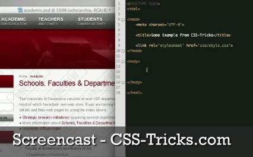

Sojourns
Learning the Ropes
I've been learning a lot while building my personal website and wanted to use my first blog post to share some of the best resources I've found:
- W3Schools Online Web Tutorials as well as W3 HTML and CSS validators
- A database and learning resource for all standardized web programming. The validators make sure your code is well formed according to the web standard and is a great debugging tool for a lot of basic mistakes. Make sure to read about the new structuring elements in HTML5!
- CSS Zen Garden
- Great examples of how to use CSS for styling your web pages.
- CSS-Tricks.com
- A blog about achieving the design and function you want on your webpage using CSS. I especially like the screencasts (see below for a link to screencast #100!).
- Notepad++
- A free program for writing code in many programming languages (although I would recommend an integrated development environment (an IDE) for non-html programming). It color codes various tags, assists you to keep your code looking clear and organized, and has tabbed editing so you can have multiple html, CSS, and JavaScript pages open at once.
I want to specifically mention Chris Coyier’s (owner of CSS-Tricks.com) recent screencast specifically as a great use of your time if you’re just getting started with HTML (#100 Let’s Write Semantic Markup). In just one hour, Chris takes a pdf visual outline of a new webpage and writes the HTML for it in a way that is all pretty and semantic. He guides the viewer through the whole thought process and introduces HTML5 organization tags. It was incredibly useful to understand how this experienced professional approaches html design.
